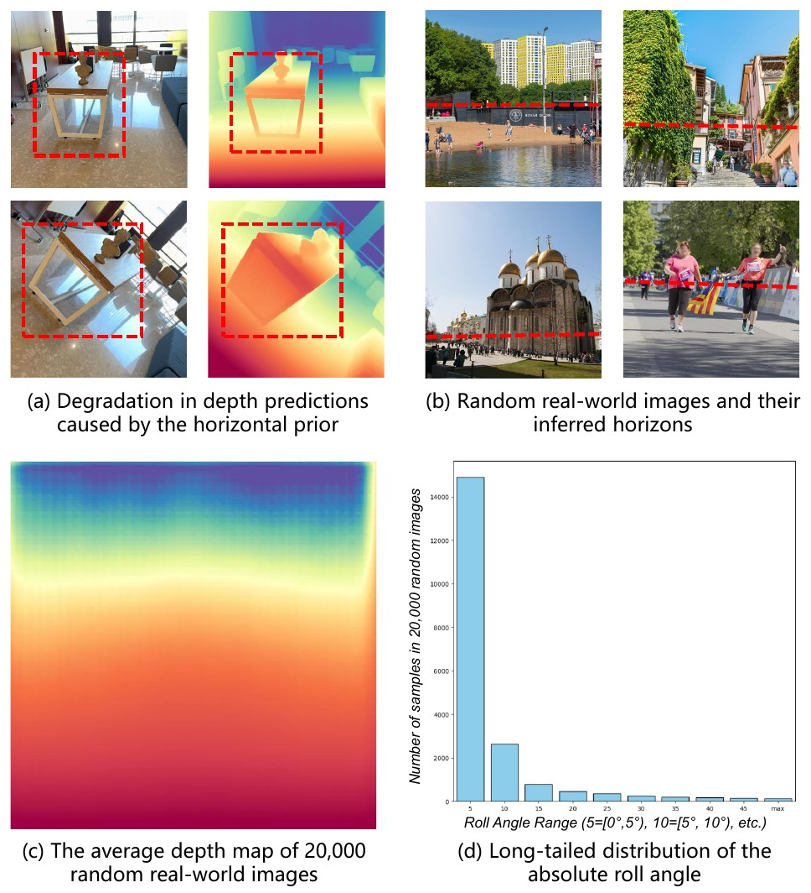
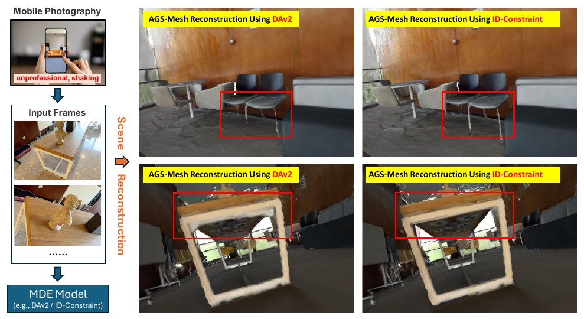
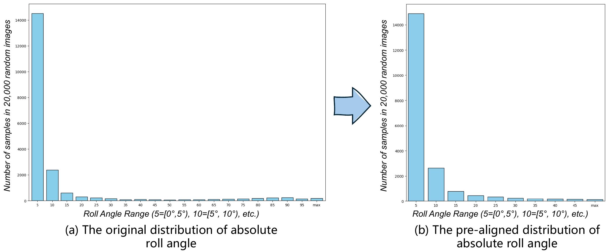
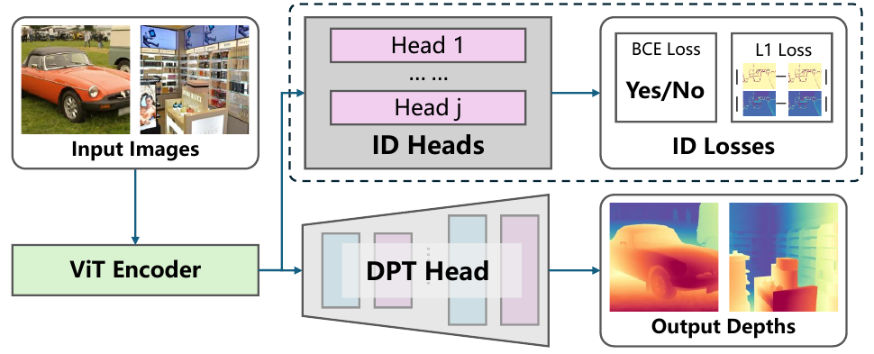
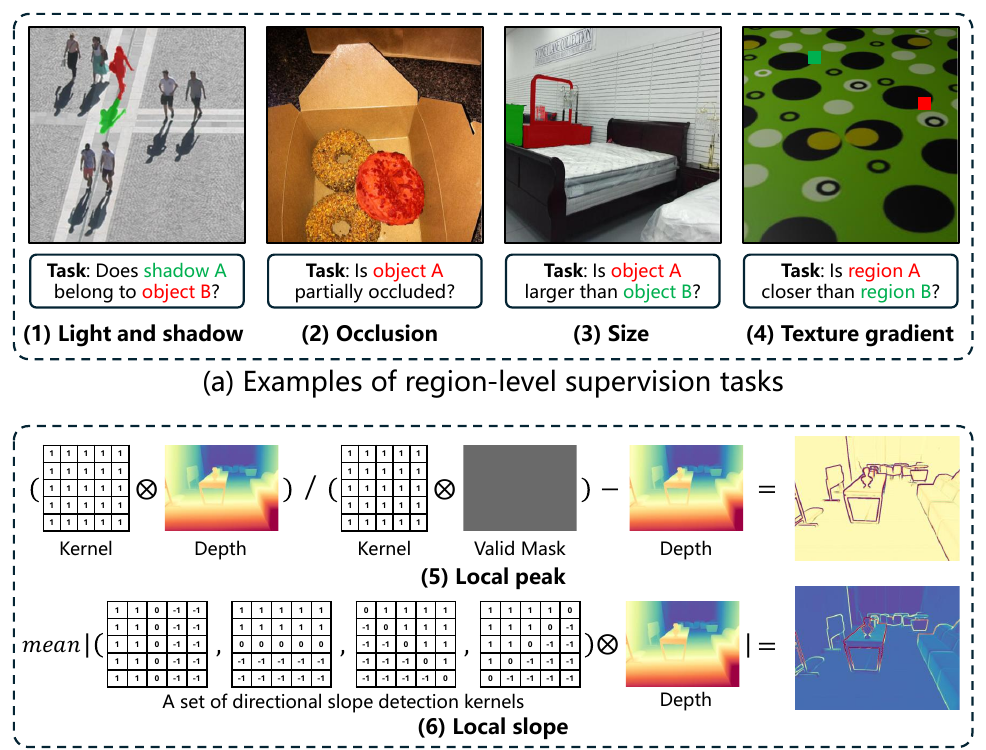
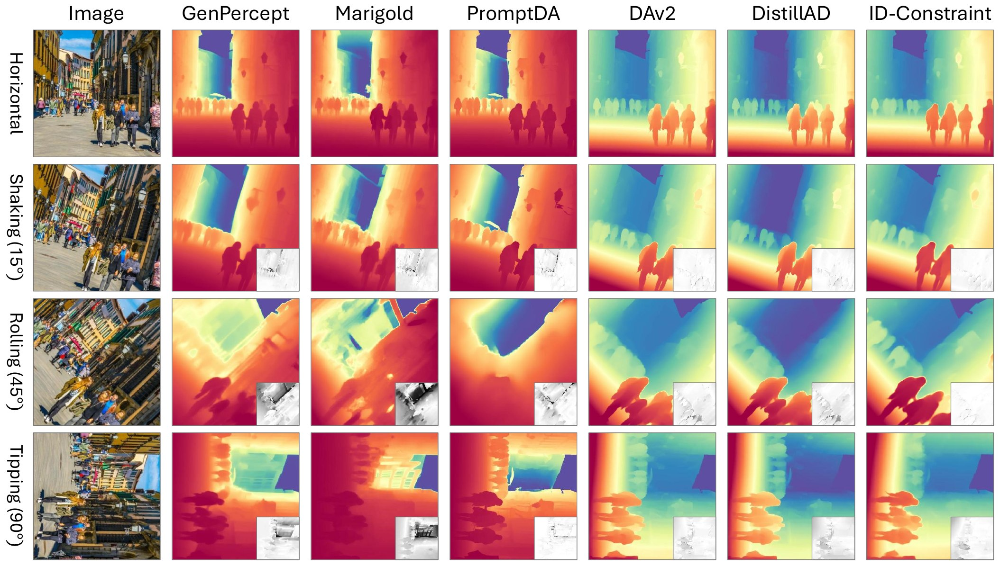
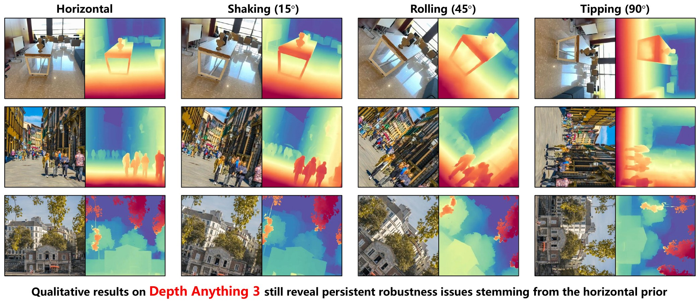
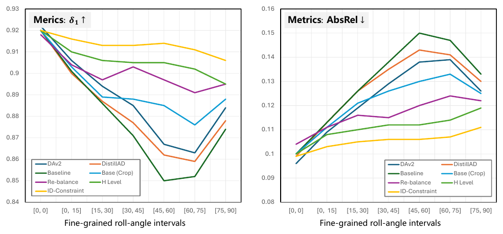

What is the Horizontal Prior?
The Horizontal Prior is the phenomenon whereby naturally collected real-world images tend to be captured in approximately horizontal orientations, resulting in a long-tailed distribution of absolute roll angles. Monocular depth estimation (MDE) models trained on such data make significantly larger errors on a rolled image than on the corresponding horizontal image. For Depth Anything V2, AbsRel rises from 0.096 to 0.127 (32% worse) between upright test images and images rolled by up to 90° (Table 2 and Appendix E of the paper).
What is ID-Constraint?
The Invariant Depth Constraint (ID-Constraint) is a training-time supervision strategy that fine-tunes the depth backbone jointly with six rotation-invariant auxiliary tasks: four region-level tasks (light and shadow, occlusion, size, texture gradient) and two pixel-level tasks (local peak, local slope). The auxiliary heads are discarded after training, so the inference architecture is unchanged. It achieves the best results in the three rolled settings of the benchmark, for example AbsRel 0.106 and δ1 0.913 under rolls up to 90° (Table 2).
Citation
Cite this work
@misc{tang2026breakinghorizontalpriorlongtailed,
title={Breaking the Horizontal Prior: From Long-Tailed Orientation Bias to Roll-Robust Monocular Depth Estimation},
author={Kaihua Tang and Ziqing Xia and Xiaoxu Zheng and Xiaoxue Zhang and Michael Bi Mi and Zhan Xu and Dave Zhenyu Chen},
year={2026},
eprint={2608.00678},
archivePrefix={arXiv},
primaryClass={cs.CV},
url={https://arxiv.org/abs/2608.00678},
}Abstract
Abstract
Despite recent advances in Monocular Depth Estimation, state-of-the-art depth foundation models remain vulnerable to robustness issues. Particularly, even slight camera rolls can result in substantial degradation in depth estimations. We attribute this problem to a previously overlooked phenomenon, termed the Horizontal Prior, which is a manifestation of long-tailed distribution bias: most training images are captured in approximately horizontal orientations due to human visual preferences and photographic habits. While intuitive remedies such as re-balanced data augmentation and horizon leveling provide partial improvements, they fail to fully address the issue. In this paper, we introduce Invariant Depth Constraint (ID-Constraint), a training-time supervision strategy that improves roll robustness by fine-tuning and jointly regularizing the depth backbone with a series of geometric and spatial reasoning tasks. These auxiliary objectives encourage the backbone to learn rotation-stable, depth-relevant representations, while the auxiliary prediction heads are discarded after training, leaving the original inference architecture unchanged. Extensive experiments on five benchmark datasets across four roll settings demonstrate the effectiveness of the proposed method.
Problem
Most photos are level. Depth models have learned to expect it.
The paper randomly samples 20,000 real-world images from the SA-1B dataset and estimates their depth maps and absolute roll angles. The average depth map has a clear horizontal structure, and the absolute roll angle follows a long-tailed distribution. According to the paper, this bias arises from professional photography conventions and inherent human perceptual preferences. In practice, handheld camera shake, intentional motion and cinematic transitions produce non-horizontal inputs, which are underrepresented in training data.
The paper defines the roll robustness of an MDE model f as f(Tθ(I)) ≈ Tθ(f(I)) under an in-plane transform Tθ with θ > 0°, and measures degradation with depth metrics (Appendix E).



Contributions stated in the paper
- The first systematic investigation of the Horizontal Prior, demonstrating that it arises from a long-tailed distributional bias in MDE.
- ID-Constraint, which mitigates the Horizontal Prior through roll-robust supervision during training.
- A new benchmark for distribution-aware depth estimation, comprising 5 datasets evaluated under 4 distinct roll settings.
- Extensive experiments demonstrating that the approach outperforms previous state-of-the-art MDE methods in terms of rolling robustness.
The four roll settings of the benchmark
Horizontal is the conventional test setting without manual rotation. In the other three settings every test image is rotated by an angle within the given range of absolute roll. The two numbers on each tile are AbsRel (lower is better) from Table 2, averaged across the five benchmarks.
- DAv2
- 0.096
- ID-Constraint
- 0.099
- DAv2
- 0.109
- ID-Constraint
- 0.103
- DAv2
- 0.119
- ID-Constraint
- 0.104
- DAv2
- 0.127
- ID-Constraint
- 0.106
Roll angles beyond 90° are extremely rare and can be losslessly mapped back to this range via a 90° rotation, so the experiments focus on these four intervals.
Method
Two intuitive remedies, then a constraint on the features
Baseline: distillation from Depth Anything V2
The algorithms are developed on ViT-based MDE models: a fine-tuned DINOv2 encoder extracts multi-level feature maps and a DPT decoder head produces the depth map. To accelerate training, the baseline adopts the distillation pipeline of Distill Any Depth (DistillAD) with Depth Anything V2 (DAv2, ViT-Large) as the teacher. The student uses the same encoder and outputs 4 feature maps at layers 4, 11, 17 and 23.
The training loss is the distillation loss of DistillAD with global normalization, an L1 distance between the normalized student and teacher depth maps (Eq. 1 of the paper), plus the gradient matching loss used in MiDaS and DAv2, computed in the affine-invariant inverse depth space.
Remedy 1: re-balanced augmentation
Following re-balanced augmentation in long-tailed classification, each training image is rotated by an angle θ uniformly sampled from [−90°, 90°]. To prevent the model from learning shortcut cues from padded boundaries, a random center crop is applied at the same time, uniformly preserving from 40% to 100% of the original image size. 10% of the samples are kept without augmentation (Appendix B). The paper notes that this can disrupt feature learning, because DINOv2 was pretrained without such augmentation.
Remedy 2: horizon leveling
A roll-angle prediction model estimates the roll directly from the image, and the image is rotated by the predicted angle to restore horizontal alignment. The predictor uses a ViT-Small backbone and a head composed of an attention pooling, a 1D batch norm, two linear layers and an optional tanh activation; it predicts the 2D vector (cos θ, sin θ). It is trained in two stages with data denoising: stage one treats most images as horizontally aligned and uses the applied rotation angle as supervision; stage two removes the half of the samples with the highest error and re-trains on the cleaned subset. The best model still has an average error of 25.90° (Table 1), which limits this remedy.
Invariant Depth Constraint (ID-Constraint)
Inspired by DepthCues (Danier et al., 2025), which shows that advances in MDE largely arise from implicitly learning human-like depth cues, the paper notes that several of these cue tasks are inherently rotation-invariant. ID-Constraint fine-tunes the DAv2 backbone with a set of Invariant Depth heads (ID Heads) and losses (ID Losses) on randomly rotated inputs. During training the ViT encoder is jointly optimized with the ID and MDE losses; the ID losses are added to the final loss with weight 1.0. At inference the ID Heads are discarded.

| # | Task | Level | Question or target | Training samples | Loss | Head |
|---|---|---|---|---|---|---|
| 1 | Light and shadow | region | Does a shadow belong to an object? | 4,716 (DepthCues) | BCE | masked average pooling of two objects, feature difference, MLP |
| 2 | Occlusion | region | Is an object partially occluded? | 24,402 (DepthCues) | BCE | masked average pooling of one object, MLP |
| 3 | Size | region | Which of two objects is larger? | 1,986 (DepthCues) | BCE | same structure as task 1 |
| 4 | Texture gradient | region | Which of two regions is farther from the camera? | 4,000 (DepthCues) | BCE | same structure as task 1 |
| 5 | Local peak | pixel | Convex and concave structures of the teacher depth | 20,000 SA-1B images | L1 | shared DPT head, hidden dimension 128 |
| 6 | Local slope | pixel | Mean absolute depth gradient along four directions | 20,000 SA-1B images | L1 | shared DPT head, hidden dimension 128 |
Zp and Zs are the local peak and local slope maps, ⊗ is convolution, K1 is a 5×5 kernel filled with ones, Kd ∈ {K↓, K→, K↘, K↙} are 5×5 directional slope-detection kernels, and Mvp is the valid-pixel mask. The maps are computed on the horizontal image and rotated together with the input. The paper chose local peak and slope because both are dense, local, affine-depth compatible and rotation-invariant; a surface normal vector is equivariant, not invariant, under image roll (Appendix E).

| Item | Value |
|---|---|
| MDE training data | 200,000 unlabeled SA-1B images (20 of the 1,000 tar files: sa_000000.tar, sa_000050.tar, …, sa_000950.tar) with pseudo depth labels from DAv2 |
| ID-Constraint data | 20,000 SA-1B images for the pixel-level tasks plus the DepthCues subsets; light-shadow, size and texture-gradient are upsampled 5×, 10× and 5×; approximately 107,842 effective samples per epoch |
| Input | resized and cropped to 560×560, then normalized |
| Optimizer | AdamW; learning rate 5×10−6 for the ViT encoder and 5×10−5 for the ID heads or DPT head; the DPT head is re-initialized before distillation |
| Schedule | MDE and ID-Constraint models: 1 epoch, batch size 8. Roll-angle prediction models: 5 epochs, batch size 64, L1 loss or cosine similarity loss |
| Environment | Python 3.12, PyTorch 2.7, TorchVision 0.22, a single A100-SXM4-80GB GPU |
Headline result
Error climbs with roll for existing models. With ID-Constraint it stays nearly flat.
The qualitative comparison at the top of this page is Figure 4 of the paper. Both charts plot AbsRel (lower is better) from Table 2 of the paper, averaged across the five benchmarks, on the same vertical scale. Hover or tap for exact values; the full table is below.
Existing MDE models
- Marigold
- GenPercept
- DistillAD
- DAv2
Re-implemented baseline and the three remedies
- Baseline
- Re-balanced Aug
- Horizon Leveling
- ID-Constraint
The ID-Constraint row of Tables 2 and 3 coincides with the full configuration of the ablation in Table 4: re-balanced augmentation and the region and pixel ID losses during training, plus horizon leveling at inference. Without horizon leveling, the same model reaches 0.114 AbsRel and 0.903 δ1 in the Tipping setting (Table 4).
Benchmark
Five datasets × four roll settings
All models are evaluated on DIODE, ScanNet, ETH3D, KITTI and NYUv2. Because neither DAv2 nor DistillAD has released evaluation code, the evaluation pipeline is based on GenPercept, and all evaluation samples are downloaded from the data links provided by GenPercept. The provided validity masks and the minimum and maximum depth thresholds determine the valid pixels; an image with fewer than 100 valid pixels is treated as corrupted and excluded. Rotations and resizing of depth maps and masks use nearest-neighbor interpolation. DAv2, DistillAD and the paper's models are evaluated in disparity (inverse-depth) space, Marigold and GenPercept in depth space, all with scale- and shift-invariant alignment. Metrics are mean absolute relative error (AbsRel) and δ1 accuracy.
| Dataset | Scenes | Valid test samples | Valid depth range |
|---|---|---|---|
| DIODE | indoor and outdoor | 771 | [0.6, 350] |
| ScanNet | indoor | 800 | [1×10−3, 10] |
| ETH3D | high-resolution images, sparse depth | 454 | [1×10−5, ∞) |
| KITTI | outdoor driving, very wide aspect ratio | 652 | [1×10−5, 80] |
| NYUv2 | indoor | 654 | [1×10−3, 10] |
Results
Full result tables
All numbers are copied from arXiv:2608.00678v1. Bold marks the best result, as in the paper. An asterisk indicates a public model evaluated with the authors' re-implemented evaluation code. Highlighted rows are the methods trained by the authors.
| Method | Horizontal (0°) | Shaking [0°, 15°] | Rolling [0°, 45°] | Tipping [0°, 90°] | ||||
|---|---|---|---|---|---|---|---|---|
| AbsRel ↓ | δ1 ↑ | AbsRel ↓ | δ1 ↑ | AbsRel ↓ | δ1 ↑ | AbsRel ↓ | δ1 ↑ | |
| Marigold* | 0.130 | 0.886 | 0.146 | 0.859 | 0.171 | 0.814 | 0.200 | 0.765 |
| GenPercept* | 0.130 | 0.891 | 0.143 | 0.869 | 0.164 | 0.830 | 0.185 | 0.794 |
| DAv2* | 0.096 | 0.922 | 0.109 | 0.906 | 0.119 | 0.895 | 0.127 | 0.883 |
| DistillAD* | 0.099 | 0.920 | 0.113 | 0.900 | 0.124 | 0.889 | 0.131 | 0.878 |
| (ours) Baseline | 0.100 | 0.920 | 0.113 | 0.901 | 0.125 | 0.887 | 0.135 | 0.873 |
| (ours) Re-balanced Aug | 0.104 | 0.918 | 0.111 | 0.904 | 0.114 | 0.901 | 0.119 | 0.897 |
| (ours) Horizon Leveling | 0.100 | 0.920 | 0.108 | 0.910 | 0.110 | 0.907 | 0.112 | 0.905 |
| (ours) ID-Constraint | 0.099 | 0.920 | 0.103 | 0.916 | 0.104 | 0.915 | 0.106 | 0.913 |
Hardest setting, per benchmark
- DAv2*
- (ours) Baseline
- (ours) ID-Constraint
| Method | DIODE | ScanNet | ETH3D | KITTI | NYUv2 | |||||
|---|---|---|---|---|---|---|---|---|---|---|
| AbsRel ↓ | δ1 ↑ | AbsRel ↓ | δ1 ↑ | AbsRel ↓ | δ1 ↑ | AbsRel ↓ | δ1 ↑ | AbsRel ↓ | δ1 ↑ | |
| Marigold* | 0.337 | 0.705 | 0.133 | 0.832 | 0.129 | 0.842 | 0.246 | 0.613 | 0.125 | 0.854 |
| GenPercept* | 0.337 | 0.715 | 0.113 | 0.871 | 0.114 | 0.877 | 0.225 | 0.633 | 0.103 | 0.895 |
| DAv2* | 0.268 | 0.736 | 0.078 | 0.938 | 0.075 | 0.941 | 0.118 | 0.873 | 0.069 | 0.957 |
| DistillAD* | 0.271 | 0.735 | 0.079 | 0.939 | 0.080 | 0.932 | 0.124 | 0.863 | 0.074 | 0.952 |
| (ours) Baseline | 0.279 | 0.732 | 0.085 | 0.923 | 0.082 | 0.929 | 0.124 | 0.863 | 0.074 | 0.950 |
| (ours) Re-balanced Aug | 0.263 | 0.748 | 0.058 | 0.967 | 0.068 | 0.957 | 0.115 | 0.877 | 0.062 | 0.967 |
| (ours) Horizon Leveling | 0.262 | 0.745 | 0.061 | 0.958 | 0.057 | 0.967 | 0.087 | 0.927 | 0.061 | 0.962 |
| (ours) ID-Constraint | 0.255 | 0.753 | 0.051 | 0.971 | 0.051 | 0.972 | 0.086 | 0.931 | 0.055 | 0.971 |


Ablation
| Re-balanced Aug | Horizon Leveling | Region Losses | Pixel Losses | ID-Constraint | AbsRel ↓ | δ1 ↑ |
|---|---|---|---|---|---|---|
| 0.135 | 0.873 | |||||
| ✓ | 0.119 | 0.897 | ||||
| ✓ | ✓ | ✓ | ✓ | 0.114 | 0.903 | |
| ✓ | 0.112 | 0.905 | ||||
| ✓ | ✓ | 0.110 | 0.909 | |||
| ✓ | ✓ | ✓ | ✓ | 0.108 | 0.910 | |
| ✓ | ✓ | ✓ | ✓ | 0.107 | 0.912 | |
| ✓ | ✓ | ✓ | ✓ | ✓ | 0.106 | 0.913 |
Fine-grained roll intervals

Additional tables
Table 1 (roll-angle prediction models) and Tables 5 to 7 (per-benchmark results for the Horizontal, Shaking and Rolling settings, Appendix D)
| Stage | Activation | L1 loss | COS loss | Angle error (°) |
|---|---|---|---|---|
| Stage-1 | tanh | ✓ | 45.69 | |
| Stage-1 | tanh | ✓ | 47.94 | |
| Stage-2 | none | ✓ | ✓ | 28.53 |
| Stage-2 | none | ✓ | 40.41 | |
| Stage-2 | none | ✓ | 46.32 | |
| Stage-2 | tanh | ✓ | ✓ | 29.49 |
| Stage-2 | tanh | ✓ | 31.99 | |
| Stage-2 | tanh | ✓ | 25.90 |
| Method | DIODE | ScanNet | ETH3D | KITTI | NYUv2 | |||||
|---|---|---|---|---|---|---|---|---|---|---|
| AbsRel ↓ | δ1 ↑ | AbsRel ↓ | δ1 ↑ | AbsRel ↓ | δ1 ↑ | AbsRel ↓ | δ1 ↑ | AbsRel ↓ | δ1 ↑ | |
| Marigold* | 0.279 | 0.776 | 0.072 | 0.946 | 0.068 | 0.956 | 0.137 | 0.821 | 0.061 | 0.958 |
| GenPercept* | 0.297 | 0.764 | 0.062 | 0.959 | 0.073 | 0.951 | 0.130 | 0.841 | 0.058 | 0.963 |
| DAv2* | 0.245 | 0.762 | 0.042 | 0.979 | 0.043 | 0.983 | 0.077 | 0.944 | 0.044 | 0.979 |
| DistillAD* | 0.246 | 0.758 | 0.046 | 0.978 | 0.050 | 0.977 | 0.074 | 0.943 | 0.047 | 0.977 |
| (ours) Baseline | 0.252 | 0.756 | 0.046 | 0.977 | 0.045 | 0.981 | 0.077 | 0.943 | 0.047 | 0.977 |
| (ours) Re-balanced Aug | 0.251 | 0.758 | 0.049 | 0.977 | 0.058 | 0.973 | 0.083 | 0.937 | 0.051 | 0.977 |
| (ours) Horizon Leveling | 0.252 | 0.756 | 0.046 | 0.977 | 0.045 | 0.981 | 0.077 | 0.943 | 0.047 | 0.977 |
| (ours) ID-Constraint | 0.251 | 0.757 | 0.045 | 0.977 | 0.043 | 0.981 | 0.077 | 0.944 | 0.047 | 0.977 |
| Method | DIODE | ScanNet | ETH3D | KITTI | NYUv2 | |||||
|---|---|---|---|---|---|---|---|---|---|---|
| AbsRel ↓ | δ1 ↑ | AbsRel ↓ | δ1 ↑ | AbsRel ↓ | δ1 ↑ | AbsRel ↓ | δ1 ↑ | AbsRel ↓ | δ1 ↑ | |
| Marigold* | 0.294 | 0.758 | 0.089 | 0.917 | 0.080 | 0.939 | 0.161 | 0.758 | 0.069 | 0.950 |
| GenPercept* | 0.306 | 0.752 | 0.081 | 0.929 | 0.080 | 0.944 | 0.149 | 0.793 | 0.064 | 0.956 |
| DAv2* | 0.250 | 0.755 | 0.049 | 0.972 | 0.051 | 0.976 | 0.115 | 0.881 | 0.049 | 0.977 |
| DistillAD* | 0.252 | 0.750 | 0.053 | 0.970 | 0.059 | 0.969 | 0.122 | 0.871 | 0.053 | 0.974 |
| (ours) Baseline | 0.256 | 0.751 | 0.053 | 0.968 | 0.055 | 0.971 | 0.118 | 0.874 | 0.051 | 0.975 |
| (ours) Re-balanced Aug | 0.253 | 0.757 | 0.047 | 0.977 | 0.056 | 0.973 | 0.119 | 0.866 | 0.052 | 0.976 |
| (ours) Horizon Leveling | 0.259 | 0.748 | 0.059 | 0.959 | 0.056 | 0.969 | 0.080 | 0.939 | 0.053 | 0.970 |
| (ours) ID-Constraint | 0.254 | 0.754 | 0.049 | 0.972 | 0.049 | 0.975 | 0.080 | 0.941 | 0.049 | 0.974 |
| Method | DIODE | ScanNet | ETH3D | KITTI | NYUv2 | |||||
|---|---|---|---|---|---|---|---|---|---|---|
| AbsRel ↓ | δ1 ↑ | AbsRel ↓ | δ1 ↑ | AbsRel ↓ | δ1 ↑ | AbsRel ↓ | δ1 ↑ | AbsRel ↓ | δ1 ↑ | |
| Marigold* | 0.319 | 0.729 | 0.110 | 0.878 | 0.108 | 0.889 | 0.198 | 0.682 | 0.091 | 0.918 |
| GenPercept* | 0.326 | 0.725 | 0.094 | 0.908 | 0.095 | 0.915 | 0.190 | 0.697 | 0.081 | 0.933 |
| DAv2* | 0.257 | 0.748 | 0.064 | 0.956 | 0.065 | 0.958 | 0.118 | 0.877 | 0.060 | 0.969 |
| DistillAD* | 0.261 | 0.744 | 0.068 | 0.953 | 0.073 | 0.951 | 0.125 | 0.866 | 0.066 | 0.963 |
| (ours) Baseline | 0.267 | 0.742 | 0.071 | 0.945 | 0.073 | 0.948 | 0.121 | 0.869 | 0.064 | 0.964 |
| (ours) Re-balanced Aug | 0.258 | 0.753 | 0.051 | 0.973 | 0.062 | 0.964 | 0.115 | 0.875 | 0.057 | 0.972 |
| (ours) Horizon Leveling | 0.262 | 0.745 | 0.060 | 0.957 | 0.056 | 0.968 | 0.084 | 0.934 | 0.056 | 0.966 |
| (ours) ID-Constraint | 0.255 | 0.754 | 0.051 | 0.971 | 0.050 | 0.973 | 0.084 | 0.935 | 0.051 | 0.973 |
Q&A
Questions and answers
What is the Horizontal Prior in monocular depth estimation?
The Horizontal Prior is the phenomenon whereby naturally collected real-world images tend to be captured in approximately horizontal orientations, resulting in a long-tailed distribution of absolute roll angles. As a consequence, the depth estimation error for an image with roll angle θ > 0° is significantly larger than for the corresponding horizontal image. The paper presents it as a new source of long-tailed bias in monocular depth estimation and supports it with three pieces of evidence: natural photographic data and the averaged depth map of 20,000 SA-1B images, the degradation of multiple MDE models when controlled roll increases, and a fine-grained roll analysis in which model behavior correlates with the roll distribution.
How much do depth models such as Depth Anything V2 degrade when the camera rolls?
Averaged over five benchmarks, the AbsRel of Depth Anything V2 rises from 0.096 to 0.127 (32% worse) and δ1 falls from 0.922 to 0.883 (3.9 points) between the Horizontal and Tipping [0°, 90°] settings. For the single image of Figure 1(a) rolled by 45°, AbsRel degrades by 45.7% (0.138 to 0.201) and δ1 by 8.7 points (0.869 to 0.782). Marigold goes from 0.130 to 0.200 AbsRel, GenPercept from 0.130 to 0.185 and Distill Any Depth from 0.099 to 0.131 (Table 2 and Appendix E).
Why is rotation augmentation alone not enough?
Re-balanced augmentation, which rotates training images by an angle uniformly sampled from [−90°, 90°], improves the Tipping setting from 0.135 to 0.119 AbsRel, but it is slightly worse than the baseline on upright images (0.104 vs. 0.100 AbsRel in the Horizontal setting, Table 2). The paper explains that it can disrupt feature learning: DINOv2 was pretrained without such augmentation, so it may enlarge the domain gap between pretraining and fine-tuning data.
Why not simply level the horizon before predicting depth?
Horizon leveling needs the roll angle. Commercial solutions typically rely on hardware sensors such as an IMU, which are unavailable for image datasets, and estimating roll from a single image is inaccurate: the best roll-angle predictor in the paper has a mean error of 25.90° (Table 1), and adapting PerspectiveFields improves it to 18.7° on the same test data (Appendix E). Since even mild rotations of [0°, 15°] already cause substantial degradation, horizon leveling alone reaches 0.112 AbsRel in the Tipping setting, compared with 0.106 for ID-Constraint (Table 2).
Does ID-Constraint make inference slower or the model larger?
No. ID-Constraint adds zero inference parameters, because the auxiliary ID Heads are used only during training and are discarded afterwards. The only additional inference cost in the reported configuration is horizon leveling, which uses a ViT-S roll-angle predictor of about 21M parameters and adds 15.4 ms latency on one A100 with batch size 1 (Appendix E).
Why local peak and local slope instead of surface normals?
The paper chose local peak and local slope because both are dense, local, compatible with affine-invariant depth, and rotation-invariant. Surface normals also have potential but are not a direct replacement: a normal vector is equivariant, not invariant, under image roll, because its components rotate with the image coordinate system (Appendix E).
Does ID-Constraint hurt accuracy on ordinary upright images?
In the Horizontal setting ID-Constraint obtains 0.099 AbsRel and 0.920 δ1, compared with 0.100 and 0.920 for the re-implemented baseline trained under the same conditions (Table 2). Depth Anything V2 is slightly better in this setting (0.096 and 0.922); the paper attributes this to the weaker performance of the re-implemented baseline, since the training code of DAv2 is not public.
Are the improvements statistically reliable?
The paper reports paired bootstrap confidence intervals with 1K per-image resamples in the Tipping setting. ID-Constraint versus re-balanced augmentation plus horizon leveling gives Δδ1 = +0.004 with a 95% CI of [0.0026, 0.0052] and ΔAbsRel = −0.004 with a 95% CI of [−0.0047, −0.0031] (Appendix E). The script used for this analysis, paired_bootstrap.py, is in the repository.
Why does performance rebound near 90° of roll?
In the fine-grained analysis (Figure 5), performance degrades gradually within [0°, 60°] and improves unexpectedly near 90°. The paper explains that a small portion of photos taken by cameras or smartphones fail to undergo horizontal correction, so the training distribution itself has a local peak near 90° (Figure 7). Methods that incorporate horizon leveling show an almost monotonic trend instead (Appendix C).
Is the degradation just an artifact of the resolution change caused by rotation?
No. Rotating an image toward 45° increases its effective resolution, which by itself makes prediction harder for a ViT with a fixed input size. The paper therefore adds a Base (Crop) setting in which each rotated image is cropped to match the original resolution. Performance improves slightly with cropping, but the overall downward trend remains consistent with the baseline (Figure 5 and Appendix D).
Are newer or stronger models such as Depth Anything 3 or PromptDA also affected?
Qualitatively, yes. Using the online demo of Depth Anything 3, the paper shows blurred boundaries around table legs and human shapes under the Rolling and Tipping settings (Figure 9). PromptDA, a depth super-resolution model that takes a low-resolution ground-truth depth map as input, still produces noticeably blurred edges under Tipping (Figure 4). The paper reports no quantitative results for these two models.
How does this work relate to long-tailed classification?
The paper maps the two intuitive remedies onto the two families of long-tailed classification methods: re-balanced augmentation corresponds to re-balanced training, and horizon leveling corresponds to training-free adjustment at inference. ID-Constraint instead targets feature learning, encouraging the backbone to rely on rotation-invariant depth cues.
Are the trained checkpoints and the training code available?
No. Because of the confidentiality policy of the company where the work was carried out, and because the author who maintains the repository has left that company, all trained checkpoints and most of the code, including all training code, cannot be released. The public repository contains the evaluation code for the four roll settings on five datasets, the inference-time model definitions, the paired bootstrap script and the SA-1B data-list scripts. The evaluation of public Depth Anything V2 and Distill Any Depth checkpoints can be run with it.
Code & release status
What the repository contains, stated plainly
The work was motivated by a real-world commercial application (mobile-captured indoor scene reconstruction, Figure 2 of the paper), and the company's confidentiality policy applies to its code and models. The author who maintains the repository has since left the company and no longer has access to the unreleased parts.
Released
test.py: evaluation of DAv2-architecture checkpoints on DIODE, ScanNet, ETH3D, KITTI and NYUv2 under the four roll settings; runs with public Depth Anything V2 and Distill Any Depth checkpoints.test_hl.py: the same evaluation with horizon leveling.datasets/: roll-rotated evaluation dataloaders, sample lists, SA-1B download and list scripts.models/: inference-time definitions of the depth model, the roll-angle predictor and the region-level ID heads.paired_bootstrap.py: paired stratified bootstrap confidence intervals._eval_others/: the roll evaluation ported into GenPercept and Marigold; visualization scripts for PromptDA and MoGe.
Not released
- All trained checkpoints: the re-implemented baseline, the re-balanced augmentation model, the ID-Constraint model and the roll-angle predictor.
- All training code: distillation training, ID losses, local peak and local slope target generation, the DepthCues training dataloader, and the two-stage training of the roll-angle predictor.
The scripts that evaluate these checkpoints are kept in scripts/ as a record of the protocol.
Run the roll-robustness evaluation on Depth Anything V2
1. Create the environment.
conda create -n idcue -y python=3.10
conda activate idcue
pip install -r requirements.txt2. Download the five evaluation datasets from the GenPercept evaluation data on Hugging Face, and edit the dataset root paths that are hard-coded in test.py.
3. Put the public Depth-Anything-V2-Large checkpoint in ./checkpoints and run:
bash ./scripts/test_dav2.shEach run evaluates the four roll settings and writes logs and per-image CSV files. The README has the complete instructions, the paper-to-code map and all result tables.